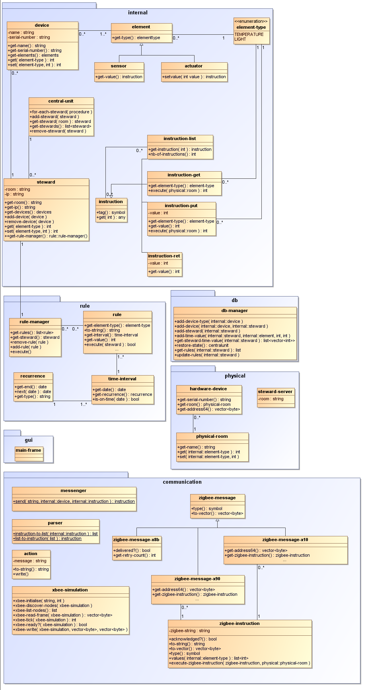

TABLE OF CONTENTS
- 1. /domotica
- 1.1. domotica/communication
- 1.1.1. communication/action
- 1.1.1.1. action/new-action
- 1.1.1.2. action/to-string
- 1.1.1.3. action/write
- 1.1.2. communication/messenger
- 1.1.2.1. messenger/send
- 1.1.3. communication/parser
- 1.1.3.1. parser/instruction-to-list
- 1.1.3.2. parser/list-to-instruction
- 1.1.4. communication/steward-port-map
- 1.1.5. communication/xbee-simulation
- 1.1.5.1. xbee-simulation/xbee-initialise
- 1.1.5.2. xbee-simulation/xbee-discover-nodes
- 1.1.5.3. xbee-simulation/xbee-list-nodes
- 1.1.5.4. xbee-simulation/xbee-read-frame
- 1.1.5.5. xbee-simulation/xbee-ready?
- 1.1.5.6. xbee-simulation/xbee-tick
- 1.1.5.7. xbee-simulation/xbee-write
- 1.1.6. communication/zigbee-instruction
- 1.1.6.1. zigbee-instruction/new-zigbee-instruction
- 1.1.6.2. zigbee-instruction/acknowledged?
- 1.1.6.3. zigbee-instruction/execute-zigbee-instruction
- 1.1.6.4. zigbee-instruction/to-string
- 1.1.6.5. zigbee-instruction/to-vector
- 1.1.6.6. zigbee-instruction/type
- 1.1.6.7. zigbee-instruction/values
- 1.1.7. communication/zigbee-message
- 1.1.7.1. zigbee-message/new-zigbee-message
- 1.1.7.2. zigbee-message/zigbee-recieve-paquet
- 1.1.7.3. zigbee-message/zigbee-transmit-request
- 1.1.7.4. zigbee-message/zigbee-transmit-status
- 1.1.7.5. zigbee-message/zigbee-vector-to-zigbee-string
- 1.1.8. communication/zigbee-message-x10
- 1.1.8.1. zigbee-message-x10/new-zigbee-message-x10
- 1.1.8.2. zigbee-message-x10/get-address64
- 1.1.8.3. zigbee-message-x10/get-zigbee-instruction
- 1.1.8.4. zigbee-message-x10/to-vector
- 1.1.8.5. zigbee-message-x10/type
- 1.1.9. communication/zigbee-message-x8b
- 1.1.9.1. zigbee-message-x8b/new-zigbee-message-x8b
- 1.1.9.2. zigbee-message-x8b/delivered?
- 1.1.9.3. zigbee-message-x8b/get-retry-count
- 1.1.9.4. zigbee-message-x8b/to-vector
- 1.1.9.5. zigbee-message-x8b/type
- 1.1.10. communication/zigbee-message-x90
- 1.1.10.1. zigbee-message-x90/new-zigbee-message-x90
- 1.1.10.2. zigbee-message-x90/get-address64
- 1.1.10.3. zigbee-message-x90/get-zigbee-instruction
- 1.1.10.4. zigbee-message-x90/to-vector
- 1.1.10.5. zigbee-message-x90/type
- 1.2. domotica/db
- 1.2.1. db/db-manager
- 1.2.1.1. db-manager/new-db-manager
- 1.2.1.2. db-manager/add-device
- 1.2.1.3. db-manager/add-device-type
- 1.2.1.4. db-manager/add-steward
- 1.2.1.5. db-manager/add-time-value
- 1.2.1.6. db-manager/get-rules
- 1.2.1.7. db-manager/remove-device
- 1.2.1.8. db-manager/restore-state
- 1.2.1.9. db-manager/update-rules
- 1.3. domotica/gui
- 1.4. domotica/internal
- 1.4.1. internal/actuator
- 1.4.1.1. actuator/new-actuator
- 1.4.1.2. actuator/class
- 1.4.1.3. actuator/set-value
- 1.4.1.4. actuator/super
- 1.4.2. internal/central-unit
- 1.4.2.1. central-unit/new-central-unit
- 1.4.2.2. central-unit/add-steward
- 1.4.2.3. central-unit/class
- 1.4.2.4. central-unit/for-each-steward
- 1.4.2.5. central-unit/get-steward
- 1.4.2.6. central-unit/get-stewards
- 1.4.2.7. central-unit/remove-steward
- 1.4.3. internal/device
- 1.4.3.1. device/new-device
- 1.4.3.2. device/add-element
- 1.4.3.3. device/class
- 1.4.3.4. device/device-types
- 1.4.3.5. device/get
- 1.4.3.6. device/get-elements
- 1.4.3.7. device/get-name
- 1.4.3.8. device/get-serial-number
- 1.4.3.9. device/set
- 1.4.4. internal/element
- 1.4.4.1. element/new-element
- 1.4.4.2. element/class
- 1.4.4.3. element/get-type
- 1.4.5. internal/element-type
- 1.4.5.1. element-type/element-type-zigbee-type-map
- 1.4.5.2. element-type/for-each-element-type
- 1.4.5.3. element-type/LIGHT
- 1.4.5.4. element-type/TEMPERATURE
- 1.4.5.5. element-type/to-string
- 1.4.6. internal/instruction
- 1.4.6.1. instruction/new-instruction
- 1.4.6.2. instruction/get
- 1.4.6.3. instruction/get-tag
- 1.4.7. internal/instruction-get
- 1.4.7.1. instruction-get/new-instruction-get
- 1.4.7.2. instruction-get/execute
- 1.4.7.3. instruction-get/get-element-type
- 1.4.7.4. instruction-get/tag
- 1.4.7.5. instruction-get/value-of
- 1.4.8. internal/instruction-put
- 1.4.8.1. instruction-put/new-instruction-put
- 1.4.8.2. instruction-put/execute
- 1.4.8.3. instruction-put/get-element-type
- 1.4.8.4. instruction-put/get-value
- 1.4.8.5. instruction-put/tag
- 1.4.8.6. instruction-put/value-of
- 1.4.9. internal/instruction-ret
- 1.4.9.1. instruction-ret/new-instruction-ret
- 1.4.9.2. instruction-ret/get-value
- 1.4.9.3. instruction-ret/tag
- 1.4.10. internal/sensor
- 1.4.10.1. sensor/new-sensor
- 1.4.10.2. sensor/class
- 1.4.10.3. sensor/get-value
- 1.4.10.4. sensor/super
- 1.4.11. internal/steward
- 1.4.11.1. steward/new-steward
- 1.4.11.2. steward/add-device
- 1.4.11.3. steward/class
- 1.4.11.4. steward/get
- 1.4.11.5. steward/get-devices
- 1.4.11.6. steward/get-ip
- 1.4.11.7. steward/get-room
- 1.4.11.8. steward/get-rule-manager
- 1.4.11.9. steward/remove-device
- 1.4.11.10. steward/set
- 1.5. domotica/physical
- 1.5.1. physical/hardware-device
- 1.5.1.1. hardware-device/new-hardware-device
- 1.5.1.2. hardware-device/get-address64
- 1.5.1.3. hardware-device/get-room
- 1.5.1.4. hardware-device/get-serial-number
- 1.5.1.5. hardware-device/hardware-device-map
- 1.5.2. physical/physical-room
- 1.5.2.1. physical-room/new-physical-room
- 1.5.2.2. physical-room/get
- 1.5.2.3. physical-room/get-name
- 1.5.2.4. physical-room/set
- 1.5.3. physical/steward-server
- 1.5.3.1. steward-server/new-steward-server
- 1.6. domotica/rules
- 1.6.1. rules/recurrence
- 1.6.1.1. recurrence/new-recurrence
- 1.6.1.2. recurrence/get-end
- 1.6.1.3. recurrence/get-type
- 1.6.1.4. recurrence/next
- 1.6.2. rules/rule
- 1.6.2.1. rule/new-rule
- 1.6.2.2. rule/execute
- 1.6.2.3. rule/get-element-type
- 1.6.2.4. rule/get-interval
- 1.6.2.5. rule/get-value
- 1.6.2.6. rule/to-string
- 1.6.3. rules/rule-manager
- 1.6.3.1. rule-manager/new-rule-manager
- 1.6.3.2. rule-manager/add-rule
- 1.6.3.3. rule-manager/execute
- 1.6.3.4. rule-manager/get-rules
- 1.6.3.5. rule-manager/get-steward
- 1.6.3.6. rule-manager/remove-rule
- 1.6.4. rules/time-interval
- 1.6.4.1. time-interval/new-time-interval
- 1.6.4.2. time-interval/get-date
- 1.6.4.3. time-interval/get-recurrence
- 1.6.4.4. time-interval/is-on-time
- 1.7. domotica/structure
- 1.7.1. structure/get-ipv4-addrs
- 1.7.2. structure/map
- 1.7.2.1. map/new-map
- 1.7.2.2. map/add!
- 1.7.2.3. map/get-elements
- 1.7.2.4. map/get-keys
- 1.7.2.5. map/key
- 1.7.2.6. map/remove!
- 1.8. domotica/unit-test
/domotica [ Modules ]
NAME
domotica
DESCRIPTION
Domotica is een systeem die het energieverbruik in een gebouw beheerst. Elke kamer van het gebouw bevat een steward die met zijn verschillende hardware toestellen communiceert. De verschillende stewards worden beheerst door een centrale server : de central-unit. De gebruiker kan via de central-unit de data van de stewards (temperatuur...) opvragen en aanpassen. Ook is het mogelijk om via een rule-systeem een planning op te stellen zodanig dat de data op een specifieke tijd vanzelf aangepast wordt.
Het domotica systeem is onderverdeeld in verschillende modules :
- internal - bevat de kern van het domotica systeem.
- communication - voorziet methodes om met de steward en hardware te communiceren.
- physical - simuleert het gedrag van de hardware en bevat de server klasse die op de steward moet runnen.
- rule - voorziet de verschillende klassen omtremt het rule-systeem.
- structure - extra ADT's die nodig zijn in het programma (zoals map).
- db - bevat de gegevensbank-manager.
- gui - hiermee kan de gebruiker interageren met de central-unit.
- unit-test - de klassen van de modules worden hierin getest.
